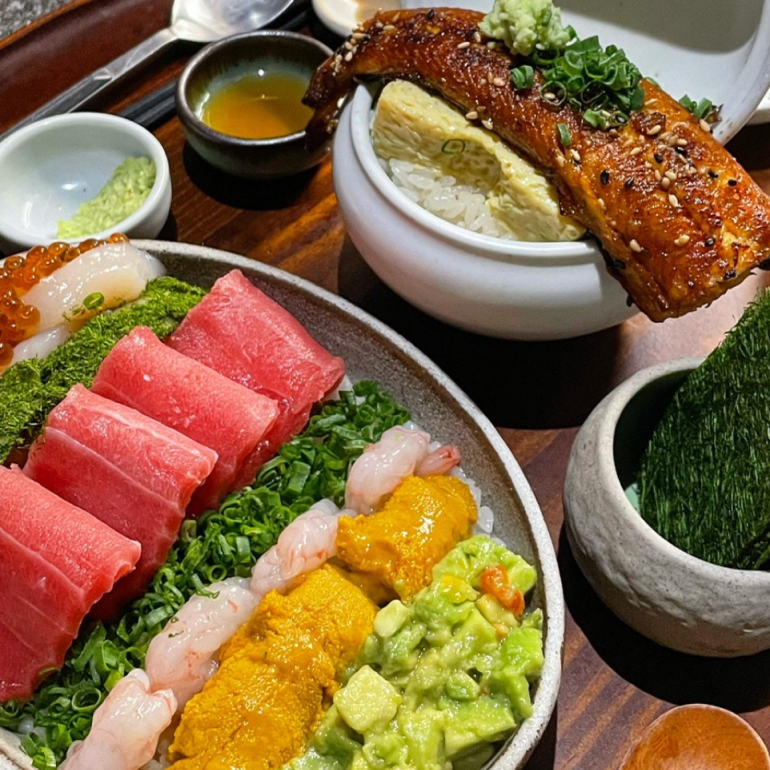
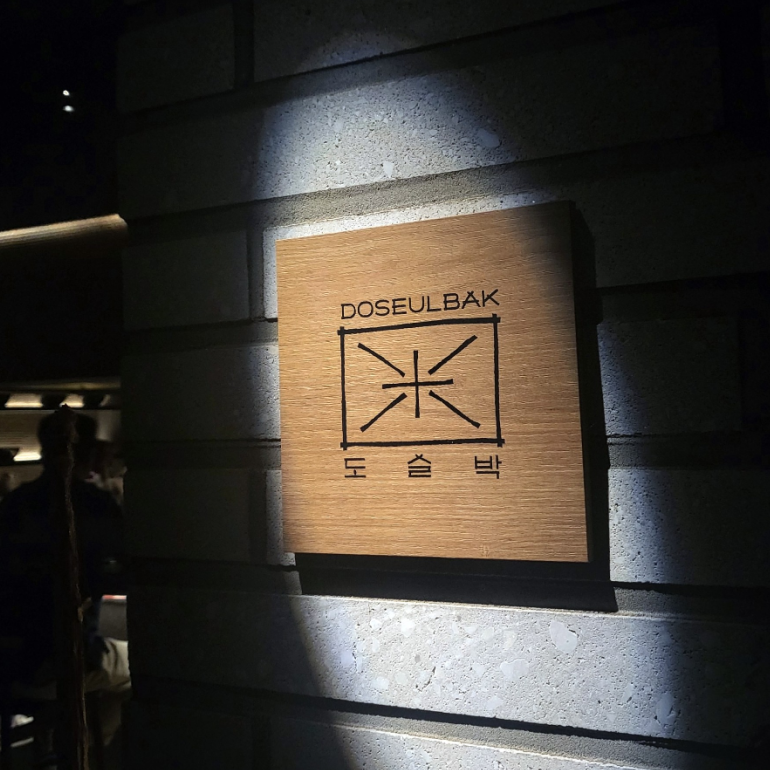
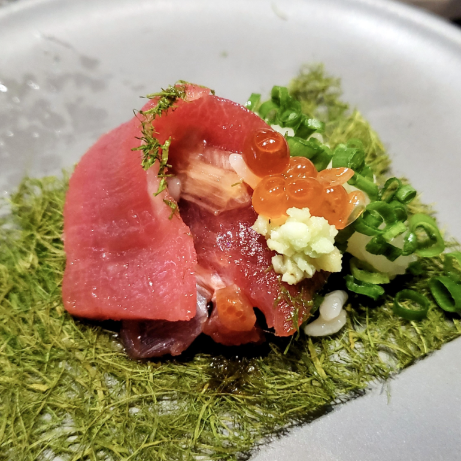
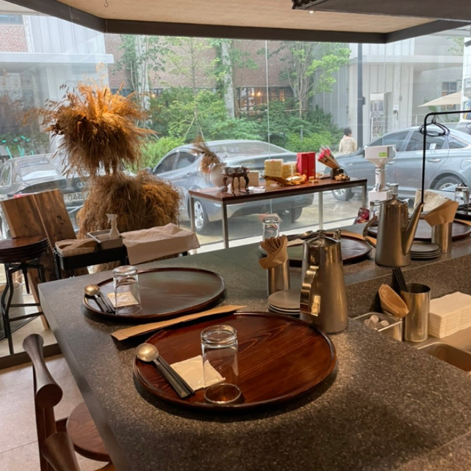
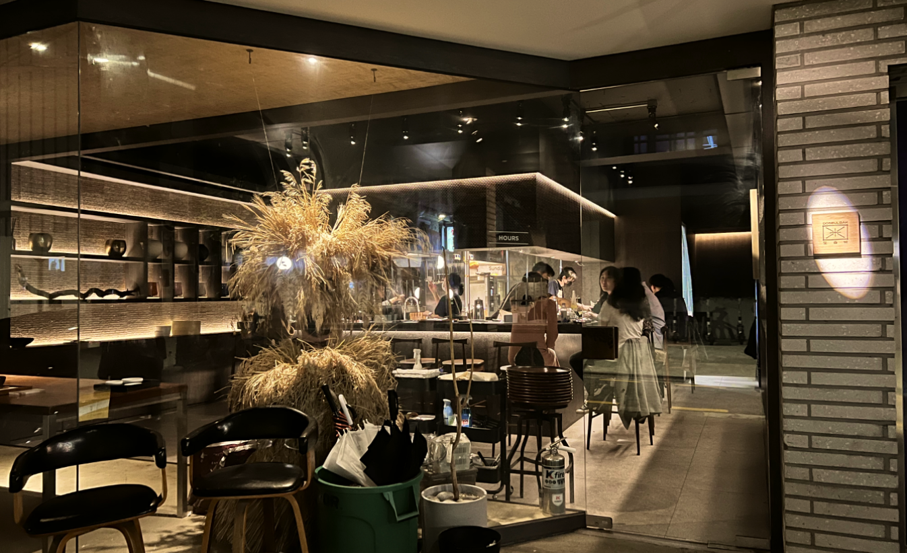

江南狎鴎亭に位置するトスルバクは、お弁当の昔の語源[ドスク]からインスピレーションを受け、おいしく健康で心強いごちそうをお届けすることに集中している店である。トスルバクでは酒類を必ず一つ注文しなければならない。 美しい五色の料理においしいお酒を添えると、食べる幸せは倍になる。価格帯が少し高いにもかかわらず、店はいつも満席だ。 しかし、キャッチテーブルで事前に予約をしておくことができるので、入場についてはそれほど心配しなくても大丈夫だ。
「海を盛る」は、どす朴のメニューの中でも最も華やかな色を誇る。値段は少し高いが、マグロ、甘海老、貝柱、アボカド、サーモンの卵、ウニ、アワビなどの多様な材料を一度に味わえるので、金銭的に余裕があればこのメニューを一緒に注文することをお勧めする。
住所 : ソウル江南区狎鴎亭路42ギル25-3 1階
最寄りの地下鉄駅 : 狎鴎亭(アックジョン)ロデオ駅(徒歩8分)
ホームページ : https://linktr.ee/doseulbak
近くの観光地

- 狎鴎亭カフェ路地
- 住所 : ソウル江南区宣陵路155キル27
- ホームページ : -
- 島山公園
- 住所 : ソウル江南区島山大路45キル20島山展示館
- ホームページ : -